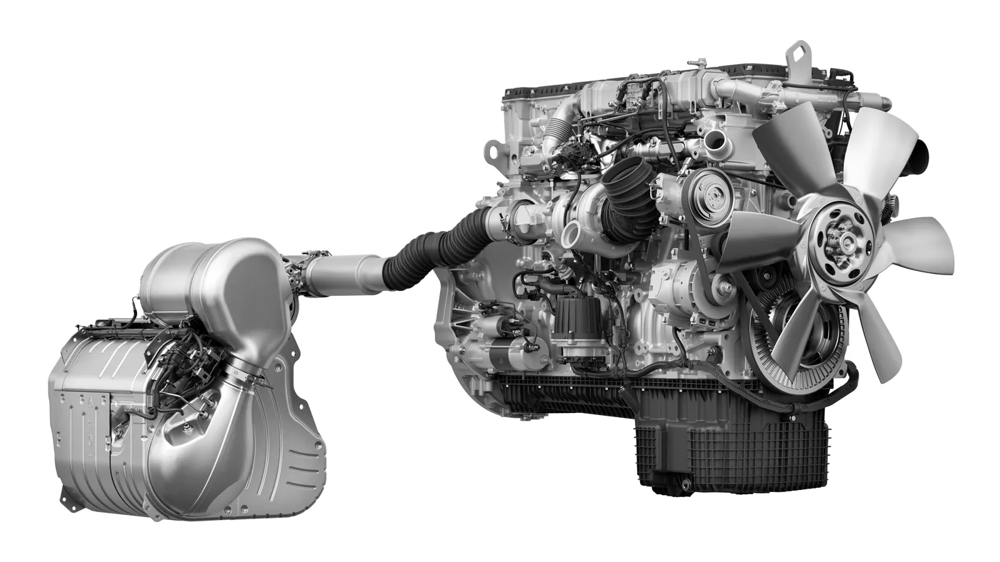

Daimler Truck North America anunció el 27 de agosto que, desde el 1 de septiembre, sus clientes podrán solicitar los motores Detroit Gen 6 DD13 y DD15 en camiones Freightliner y Western Star. La familia fue desarrollada para cumplir los requisitos de emisiones EPA 2027 de Estados Unidos sin reemplazar por completo la plataforma actual.
La estrategia es una evolución controlada. Detroit afirma que aproximadamente el 75% de los componentes principales continúa desde la generación anterior. Para una flota, conservar arquitectura y procedimientos conocidos puede reducir la curva de aprendizaje del taller, aunque los nuevos sistemas igualmente necesitarán diagnóstico y capacitación específicos.
Por qué aparece una nueva generación
EPA 2027 endurece el control de óxidos de nitrógeno y exige que los sistemas mantengan su desempeño durante más tiempo. Cumplir ese objetivo no depende solamente de la combustión. Motor, inyección, sensores, catalizadores, filtro de partículas y software deben funcionar como una sola cadena.
Detroit eligió conservar una base probada y concentrar los cambios en áreas que afectan emisiones, eficiencia y disponibilidad. La plataforma pesada original fue presentada en 2007 y, según la compañía, acumula más de 1,2 millones de unidades en aplicaciones de ruta y vocacionales.
La continuidad no significa que cualquier repuesto anterior sea compatible. Cambios de calibración, conectores, sensores y números de pieza pueden impedir una sustitución directa. La identificación por número de serie seguirá siendo indispensable.
Nuevo sistema de combustible
La familia Gen 6 incorpora un circuito de combustible rediseñado. La marca describe una arquitectura simplificada para entregar caudal de forma más uniforme y mantener la presión necesaria para una combustión eficiente.
En un diésel moderno, pequeñas variaciones de presión o pulverización afectan consumo, potencia, temperatura de escape y generación de partículas. Por eso el cuidado del combustible será tan importante como la tecnología: filtros correctos, drenaje de agua, limpieza durante el servicio y diagnóstico antes de reemplazar inyectores.
Una arquitectura más simple puede facilitar la confiabilidad, pero la prueba real será su comportamiento con kilometraje elevado, distintos ciclos y combustible de calidad variable. Los primeros datos de flota permitirán conocer intervalos y patrones de desgaste.

Pre-SCR y gestión térmica
Una de las novedades es un sistema pre-SCR basado en tecnología de reducción catalítica selectiva ya conocida. Trabaja con una estrategia térmica que aprovecha el calor del escape para alcanzar antes la temperatura de operación.
Los catalizadores son más eficaces dentro de una ventana térmica determinada. En trayectos cortos, mucho ralentí o clima frío, mantener esa temperatura es difícil. Detroit sostiene que el nuevo diseño reducirá las regeneraciones estacionarias, una mejora que puede disminuir detenciones y consumo improductivo.
El beneficio depende del uso. Un camión de larga distancia mantiene carga y temperatura con mayor estabilidad que una unidad urbana o vocacional. El sistema deberá reconocer ambos escenarios sin comprometer consumo ni vida útil.
Ventaja para aplicaciones vocacionales
La compañía señala que el postratamiento ocupa el espacio existente del chasis y no agrega volumen detrás de la cabina. Esto es relevante para volcadores, hormigoneros, grúas y otras carrocerías donde unos centímetros pueden obligar a rediseñar equipos.
Conservar puntos de integración reduce trabajo para fabricantes de carrocerías y facilita que una configuración conocida migre a la nueva norma. De todos modos, cada montaje deberá validar temperatura, protecciones, accesibilidad de servicio y distancia respecto de depósitos o elementos sensibles.
Tres años de pruebas
Detroit informa tres años de validación y más de ocho millones de millas en condiciones reales. Las pruebas incluyeron temperaturas extremas, gran altitud y períodos prolongados de ralentí. Es una combinación pensada para observar arranque, refrigeración, lubricación y desempeño del postratamiento fuera de un laboratorio.
La cifra de kilómetros es importante, pero no reemplaza el seguimiento de las primeras unidades comerciales. Los talleres deberán prestar atención a boletines técnicos, actualizaciones de software y cambios de referencia durante los primeros años.
Qué cambia para mantenimiento
- Combustible: controlar contaminación, agua, presión y restricción de filtros antes de intervenir la inyección.
- DEF: utilizar fluido correcto, evitar suciedad y revisar cristalización, bomba, dosificador y calefacción.
- Sensores: diagnosticar temperatura, presión diferencial y NOx con datos en vivo, no solamente con códigos.
- Admisión: inspeccionar filtro, mangueras, intercooler y pérdidas que alteren aire y temperatura.
- Software: registrar versión de calibración y completar procedimientos después de reemplazar componentes.
- Regeneración: investigar la causa de una frecuencia elevada antes de forzar ciclos repetidos.
Qué significa para Argentina
El anuncio corresponde al mercado norteamericano y a su norma EPA; no confirma lanzamiento local. Sin embargo, Freightliner y Western Star circulan en la región y los cambios muestran hacia dónde se dirige el mantenimiento de motores pesados: mayor integración entre mecánica, postratamiento y software.
Para repuesteros y talleres argentinos, la lección inmediata es mejorar la identificación técnica. Una pieza visualmente igual puede pertenecer a una calibración distinta. Catálogo por número de motor, información de aplicación y capacidad de diagnóstico serán cada vez más relevantes.
Una evolución antes que una ruptura
Detroit busca que la transición a EPA 2027 resulte previsible. Mantener tres cuartas partes de los componentes centrales puede facilitar repuestos y conocimiento, mientras que el nuevo combustible y postratamiento apuntan a bajar emisiones sin imponer una arquitectura completamente desconocida.
La verdadera medida será el costo por kilómetro: consumo, regeneraciones, disponibilidad, repuestos y tiempo de taller. Esa información comenzará a aparecer cuando los primeros Freightliner y Western Star Gen 6 entren en operación.